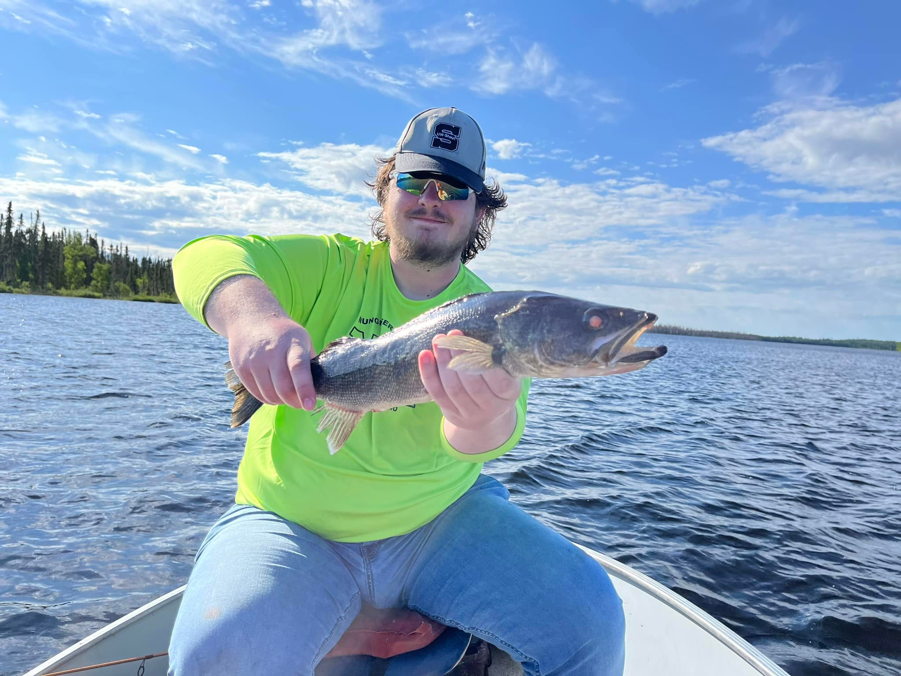

About Me
Personal Pasion
I am sophmore in the Digital Marketing Technology Major with a second Major in ICT and a Minor in Business Administraion. Some of my hobbies includePlaying video games, watching horror movies, fishing, camping, and going out and doing photography.
Some video games that I enjoy to play are World of Tanks, Minecraft, Dead by Daylight, Call of the wild the angler, Call of the wild the hunter, and Battlefield 4
My favorite fish to go for are Northern Pike, walleye, Bluegill, Yellow perch, Catfish, and White Bass.
Major Life Events
One Problem that I have had to deal with in my life is my battle with anxiety. from a around the age of 14 I started to suffer with really bad anxiety and never really started to work on it until my junior year of high school. The thing I used to help control my anxiety was taking medication to help control the chemicals released when I start to get anxiety.
Major Achievment
My biggest achievment was recieving a major award that many people know. and that is the Eagle Scout award in boy school. for me to recieve this reward I had to plan and operate my own service project. For mine id did first aid kits for my school district with a bunch of first aid stuff for if there is a mass injury incident at the schools. I did this with the school nurses to make sure all the teachers would be trained to use them.
Places I'd like to go
- 1. Sweden
- 2. Germany
- 3. Alaska
- 4. Nashville
- 5. UK